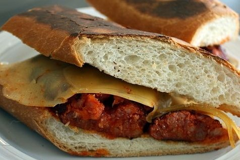

Diego Alonso Ocampo
| Pan |
| Nocilla de dos colores |
| Platano en rodajas |
| 0.85€ |
| 2.55€ |
| 0.75€ |
Abrimos el pan y lo untamos con una buena cantidad de nocilla que salga un poquito por los bordes y echamos 6/8 rodajas de platano
Diego Alosno Ocampo
| Pan |
| Chorizo |
| Queso |
| 0.85€ Mejor precio |
| 0.90€ |
| 1.10€ |
Cojemos y abrimos el pan, echamos el queso y el chorizo y ya estaria listo la manera facil
Abrimos el pan y lo doramos un poco en la sarten, cojemos y doramos el chorizo un poco y lo metemos en el pan con el queso. Lo dejamos un poco mas en la sarten y ya estaria listo para comer
Pulsa en el Boton para ver la sugerencia